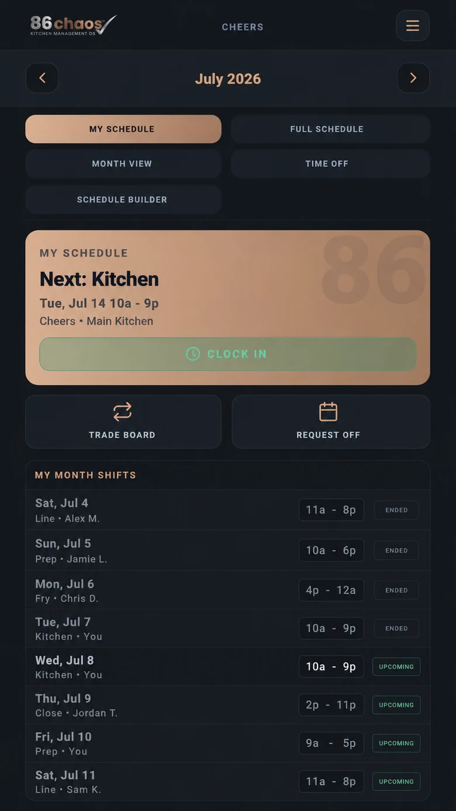
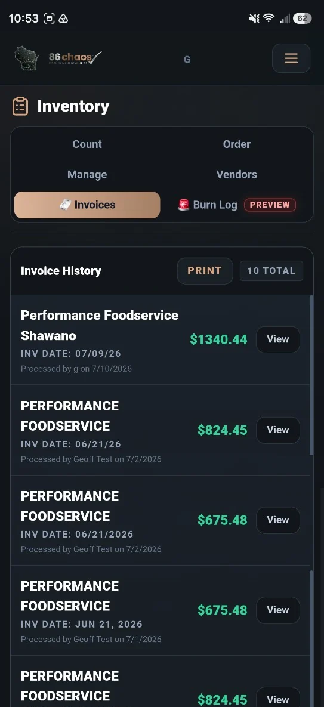
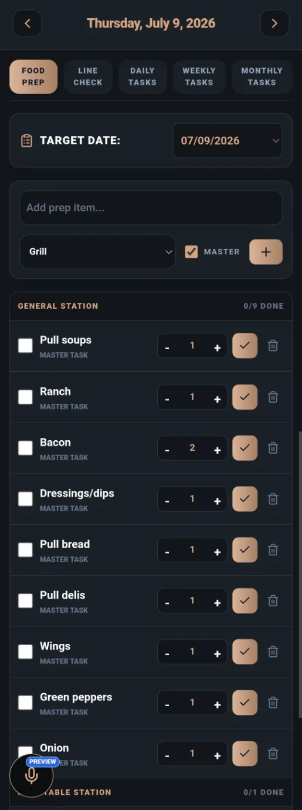

Ops
Daily work in one place
Prep, schedules, 86 alerts, reminders, inventory, recipes, maintenance, and manager attention stay connected instead of scattered across paper and texts.
View FeaturesProduct Tour
Tour the screens for prep, scheduling, recipes, inventory, financial visibility, and maintenance, then see how 86Voice and Smart Kitchen intelligence connect the work around them.

Connected intelligence
Inventory affects ordering. Ordering affects prep. Prep affects waste. Waste affects par. Menu links affect 86 alerts. 86 Chaos uses AI to help connect those pieces into decisions managers can act on.
See AI ToolsSmart Kitchen value
The product works best when daily kitchen data connects across workflows. They feed the intelligence layer.
AI Ordering
86 Chaos can turn inventory data, invoices, event needs, prep prediction, and waste history into vendor-grouped order drafts that managers can review before saving or applying to the normal Order screen.
View AI + Ordering
Voice workflow
The product screens are useful. 86Voice makes them faster. A spoken command can update prep, create a reminder, open a recipe, or start an 86 alert without stopping the shift.
Explore 86VoicePrep, schedules, 86 alerts, reminders, inventory, recipes, maintenance, and manager attention stay connected instead of scattered across paper and texts.
View FeaturesUse natural kitchen language for prep, tasks, 86s, reminders, maintenance, waste, status questions, menu impact, and ordering commands.
Explore 86VoiceScanning, forecasting, smart matching, price warnings, and order drafts help managers move faster while authorized people approve business-changing actions.

Stations, quantities, done counts, print actions, and mark-done controls show exactly how a busy prep list behaves.
90 days free, no credit card, no purchase required, and free setup during beta. Accepted restaurants help shape the product and receive 50% off the first location for the first paid year.